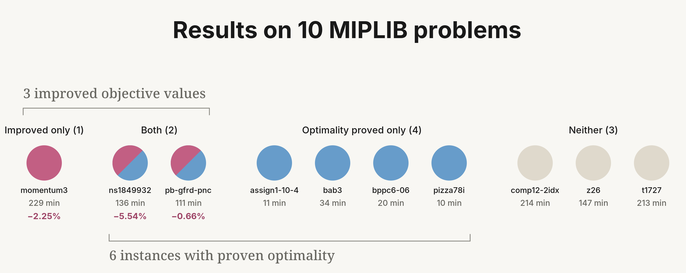

Many classical CS problems (bin packing, knapsack, scheduling, TSP, network design, etc.) are examples of MILP. Almost all decision problems can be formulated as MILP. I selected 10 open MILP problems from MIPLIB, where 9 years of work on commercial solvers and human-designed algorithms failed to find or prove optimal solution:
